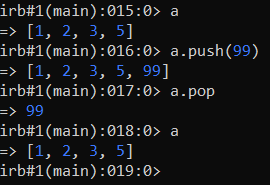

Operations between arrays
•
Union (|): concatenates two
arrays (removing duplicates)
•
Intersection (&): only elements that are common to both
arrays are returned (removing duplicates)
•
Difference (-): returns the first array without
the elements contained into the second array
•
push & pop Bibliography:
https://ruby-doc.org/core-3.0.0/Array.html